Julian Bohnenkämper
Medizinische Bild- und Signalverarbeitung
12.02.2026
\(\renewcommand{\vec}[1]{\boldsymbol{\mathbf{#1}}}\) \(\renewcommand{\mat}[1]{\boldsymbol{\mathbf{#1}}}\) \(\newcommand{\R}{\mathbb{R}}\) \(\newcommand{\e}{\mathrm{e}}\) \(\newcommand{\d}{\mathrm{d}}\) \(\newcommand{\G}{\mathcal{G}}\)
Input 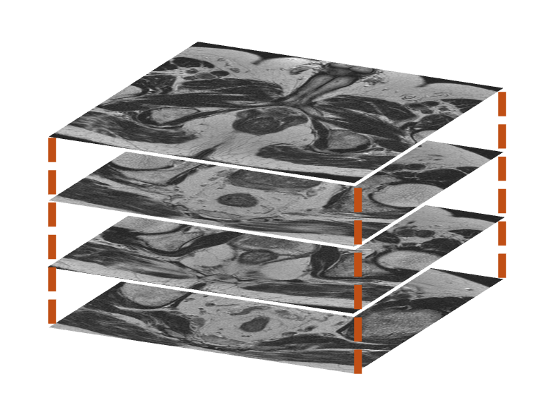
Pathtraced Render
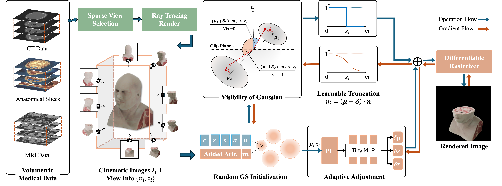
\[ \alpha \cdot \mathcal G (\vec x; \vec \mu, \vec s, \vec r) \cdot \vec c \]
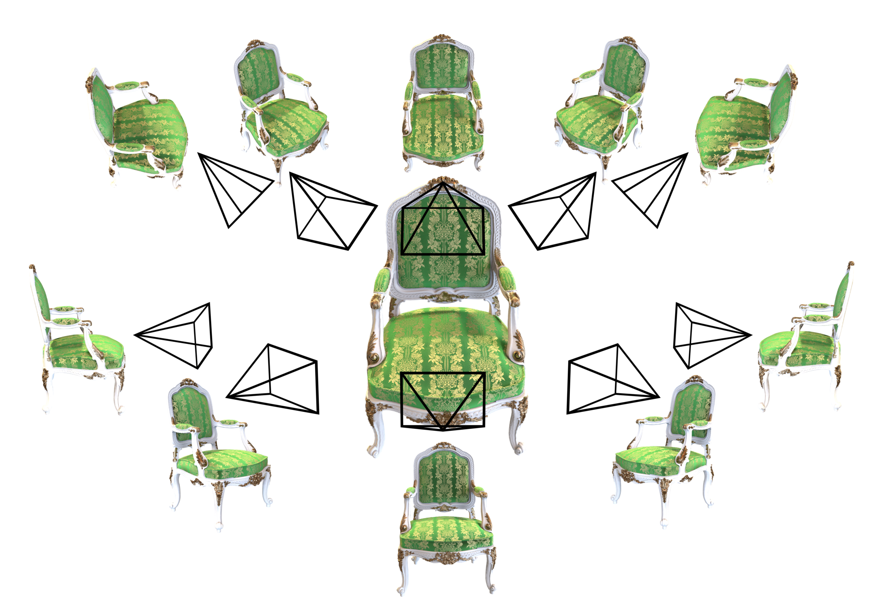
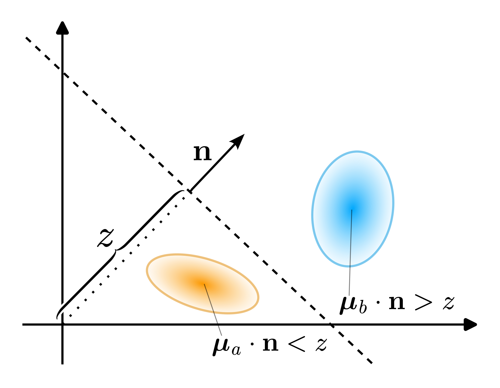
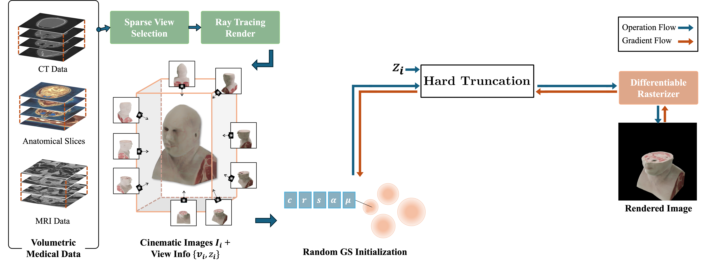
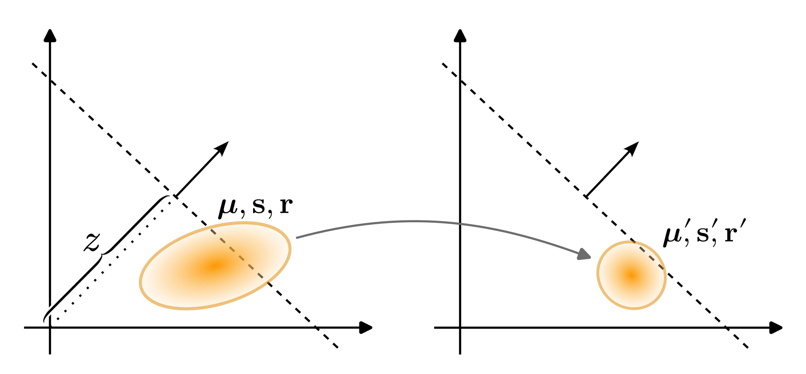
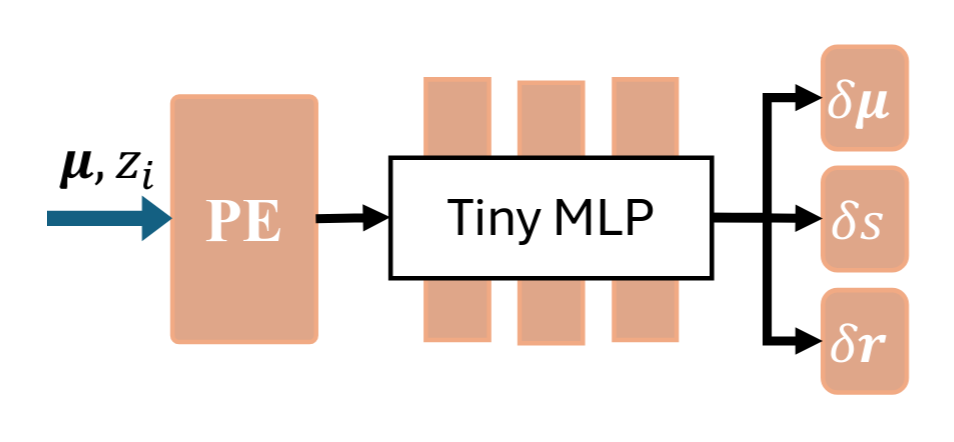
\[ \begin{align*}\vec \mu' &= \vec \mu + \delta \vec \mu \\ \vec s' &= \vec s + \delta \vec s \\ \vec r' &= \vec r + \delta \vec r \end{align*}\]
\[ \gamma(x) = [ \sin(2^0 \pi x), \cos(2^0 \pi x), \dots, \sin(2^L \pi x), \cos(2^L \pi x) ]^\top \]
Example — NeRF
With PE
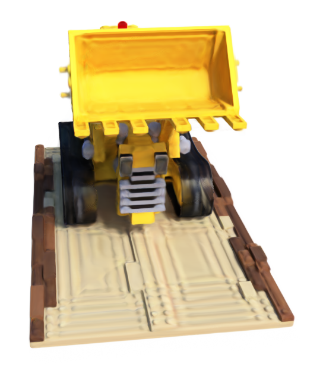
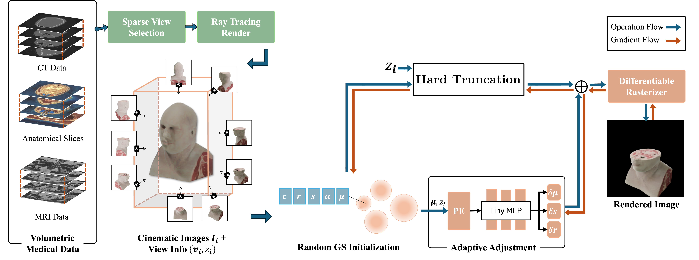
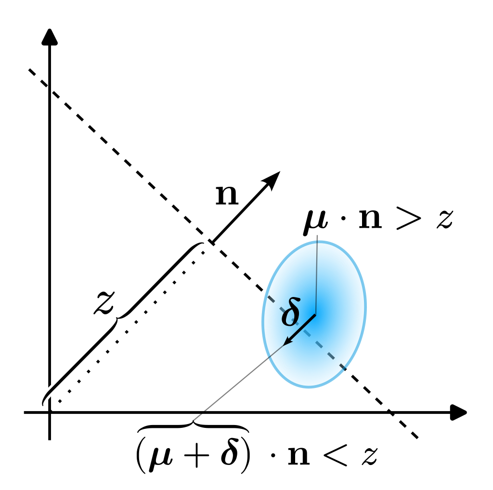
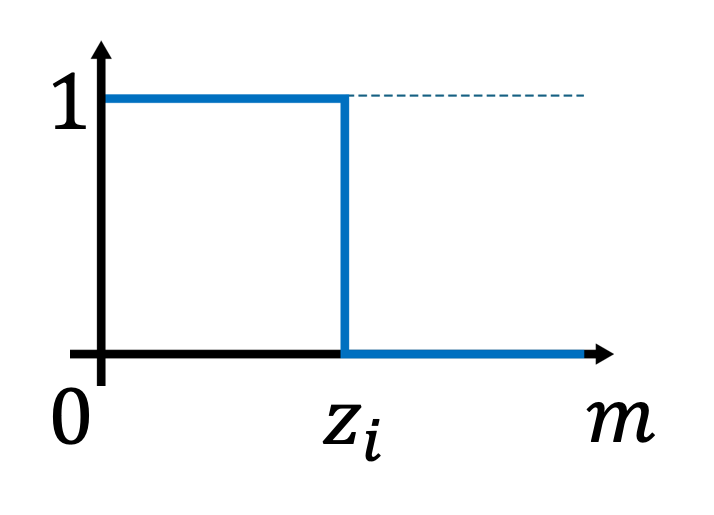
Forward Pass
Backward Pass 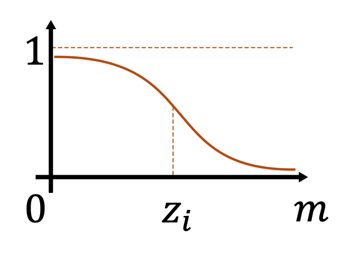
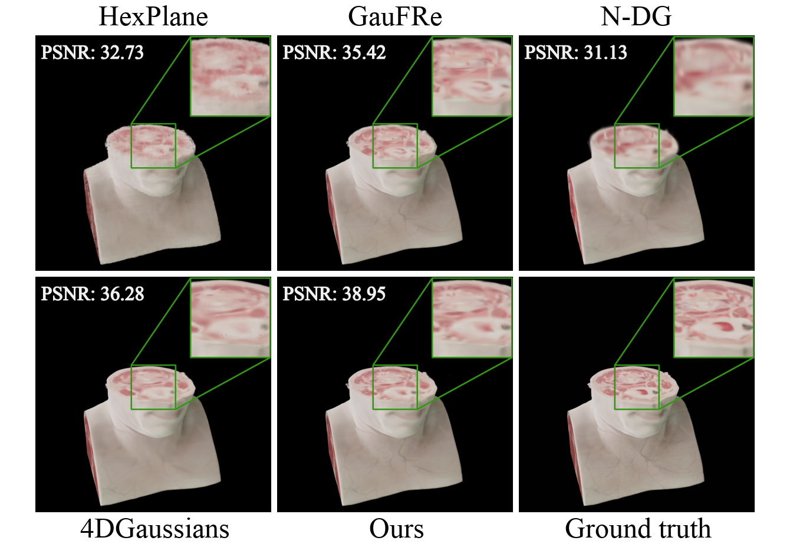
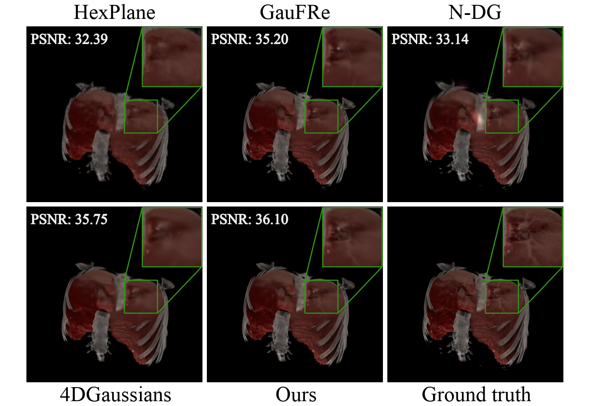
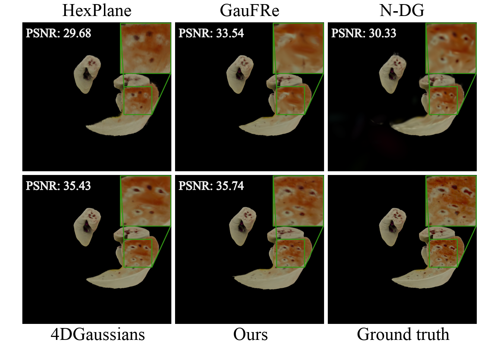
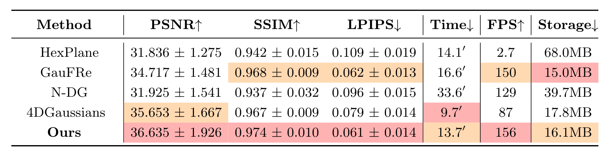
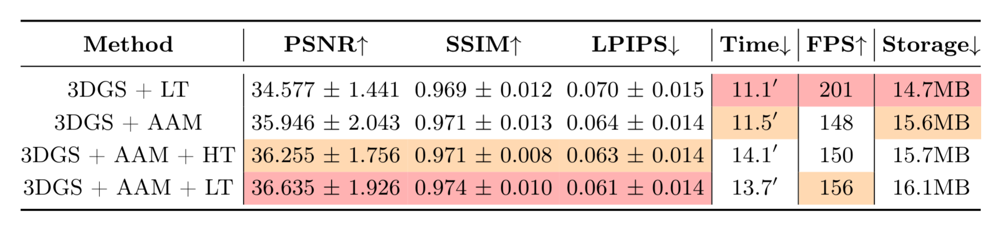
What’s next?